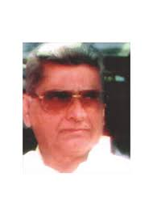

Ramanlal Kunvarji Desai
Founder of
R K Desai Memorial Trust
The Ramanlal Kunvarji Desai Memorial Trust has completed fourteen successful years
after launching a new programe of establishing an educational institution for
providing special technical courses for the youth of this growing industrial as
well as agricultural rural area of VAPI Umbergaon region. Presently the trust is
running colleges of Bachelor of Computer Application (BCA), Bachelor of Business
Administration (BBA), Bachelor of Commerce (B.com), Bachelor of Education
(B.Ed.) and Primary Teaching courses which will train the youth to meet
the challenges of E-Commerce and Information technology based subjects.
The trust is guided by the principles of late Shri Ramanlal Kunvarji Desai
"Achchhariwala", a well-known leader of Valsad District. Late shri Ramnbhai
was actively associated with number of social and educational instititions and
serve them as President. It was his cherished dream to provide technical education
and training to the youth of his beloved area to meet the challenges of this
generation and hence his educational complex is being dedicated in the memory
of this great social worker
Ramanlal Kunvarji Desai
Chairman of
R K Desai Memorial Trust
From Desk of Chairman
Vapi is one of the most important Industrial Zone in all over Asia, specially
chemicalzone. It's covered up by many villages located in Trible Region. After
independence, we are unable to change their lifestyle, though we have put number
of projects for their improvement. We feel, it's possible only through quality
education
Our inspirator Late Sh. Ramanlal Kunvarji Desai, a well known grassroot worker
in TrebleRegion throughout the life was also in belief thatthe upliftment of poor
youngsters is possible by providing them the good quality education.